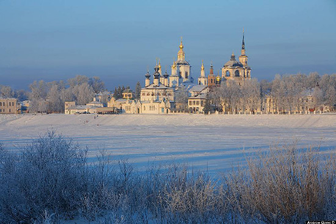
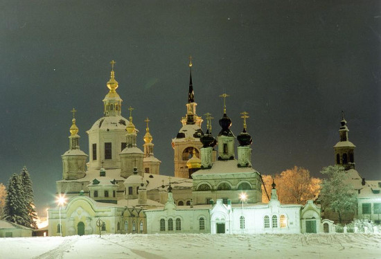
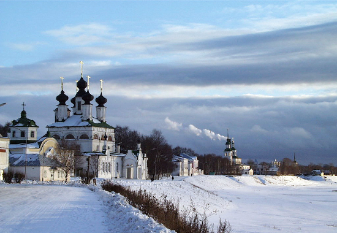
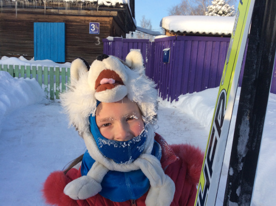
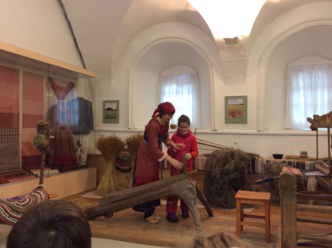

Лыжи, дети, Великий Устюг.
А мы знаем красивое место, где есть снег! Да, есть снег на Новый год. Есть снег на школьные каникулы в марте. Много снега. Белого, пушистого. Место где все еще есть мороз и солнце. Речь про Великий Устюг. Если вы не в курсе, это невероятно красивый город. Судите сами: две реки Юг и Сухона сливаются вместе, образуя Северную Двину. И в этом месте стоит город с десятками церквей, старинных купеческих домов. На самой стрелке Юга и Сухоны расположен за белокаменной стеной Троице Гледенский монастырь. Вот здесь, на просторе северных рек мы предлагаем покататься на обычных беговых лыжах. Не просто покататься, а сходить на лыжах в настоящую северную избу, где будет топиться русская печь, посетить резиденцию Деда Мороза... Замечу, что Великий Устюг не только знаменит своей северной красотой, не только может похвастаться снегом, но и … не зависит от курса евро, легко достижим на поезде как из Петербурга так и из Москвы, а его посещение не требует заграничного паспорта и визы.

Итак, наша новая программа. Она рассчитана на семейный отдых. Детей берем (с родителями) от 7-8 лет. Дистанции, что нам придется преодолевать не большие. Даже если вы не умеете кататься на лыжах, то этот маршрут все равно для вас. Так как в первый ходовой день после приезда у нас запланировано катание на местной лыжной базе, где возможен как прокат лыж, так и обучение. На маршруте сопровождает опытный лыжник. Поможет, научит. Конечно, если вы сильно катаетесь, и мечтаете о многокилометровых прогонах, то этот маршрут вам не подойдет. Мы работаем и над маршрутом для вас, но пока — вариант для детей и их родителей.

Чем особенно хорош Устюг? Здесь можно совместить катание и культурную программу. Сходили на лыжах к той или иной достопримечательности, а вечером можно посетить один из Устюжских музеев. Есть музеи более детские, как например, музей новогодней игрушки, или музей природы края, а есть и более «серьезные», как исторический музей (город основан в 1147 году, ровесник Москвы).


Где будем жить?
В одной из гостиниц Устюга. Размещение двухместное. Удобства. Завтрак. Цивилизация :). А на фото ниже - мастер класс в музее льна.

Как добраться?
Добраться до Великого Устюга довольно просто: поездом из Москвы или Петербурга до станции Ядриха (Котлас), где мы вас встретим и отвезем (53 км) до места проживания. Поезд из Петербурга выходит в 9-50 утра, из Москвы в 12-30, а прибывают в Устюг утром, в 9 часов. Инструкцию по билету пришлет гид.
Поехали?
Итак, программа:
День 1. Утром мы встречаемся в Котласе, переезжаем в Устюг (1 час). Завтракаем в гостинице, отправляемся в город-музей мастеров. Во-второй половине дня отправляемся на лыжную базу, берем лыжи, и делаем свои первые шаги на Устюгской земле. Вернее, на устюгском снегу. Здесь наша программа такая: те кто уже умеет и любит кататься, получат возможность покататься на трассе. Те, кто катается плохо, пройдут инструктаж. Здесь же можно взять лыжи в прокат. Надеюсь в этот день будет холодно. Почему? Вечером задумана баня. Хорошо в баню с морозца...
День 2. 12 км. Это интересный день. Утром мы спустимся к Сухоне прямо в городской черте, станем на лыжи, и пойдем к месту слияния рек Сухона и Юг. Мы увидим самую красивую панораму на Устюг — его белоснежные храмы, стоящие над рекой. На месте слияния Сухоны и Юга мы осмотрим Гледенский монастырь, и зайдем к нашим знакомым в настоящую северную избу. Вечером, после обеда, мы посетим музей новогодный игрушки. Для полноты картины, и чтобы каникулы не казались раем, мы посетим еще и максимально приближенные к реальности занятия в старорусской школе. Посмотрим настоящие розги. Увидим школьный класс, образца 19 века. Вечером, если хватит сил, вновь посетим сауну.
День 3. 12 км. Поход к Деду Морозу. Многие дети знают, что не все Деды Морозы настоящие. Есть не настоящие. К чему обманывать детвору? Настоящий Дед Мороз один, и живет он в Устюге. Вот в его резиденцию мы и отправимся. На лыжах. Опять мы спускаемся на Сухону, и идем на лыжах вдоль берега. Теперь в другую сторону. На красивом берегу реки, в окружении леса стоит резиденция настоящего Деда Мороза. Здесь довольно интересно: есть тропа сказок, есть питомник с животными. Тут и олени и лисы, медведи и белки. Словом, много северной фауны. После возвращения — обед. В отличие от обеда, ужин надо заслужить. Например, приняв участие в мастер классе по резьбе по бересте. Это традиционный русский промысел. Даром ли среди берез живем? Умелый мастер может сделать из коры берез настоящие шедевры. Ну и детей научить кое-чему тоже может.
День 4. В этот день у нас короткая программа. Мы посещаем музей этнографии, занятие "лен, мой лен", где дети опять же могут приобщиться к работе со льном. В 12-30 мы прощаемся с Устюгом и уезжаем домой. Автобус отвезет вас на станцию Котлас, откуда мы можете уехать домой. Кстати, в Великий Устюг теперь летают и самолеты.
Стоимость маршрута можно посмотреть на странице «Календарь».
В стоимость входит:
вечернее питание
проезд до Великого Устюга
входные платы в Вотчину Деда Мороза
прокат (если нужно) лыж